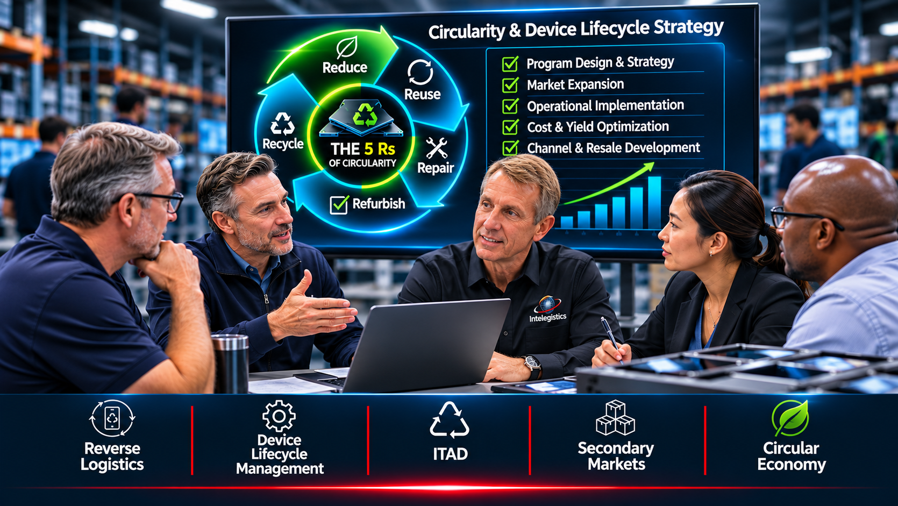

Built from operating experience, not observation.
Since 2002, Intelegistics has helped companies design, launch, and scale the reverse side of the supply chain, where product comes back and value is won or lost.

photos/about-story.jpgAn advisory and operating practice
Intelegistics is an advisory and operating practice focused on reverse logistics, device lifecycle management, ITAD, secondary markets, and circular-economy programs.
We’ve maintained this practice alongside executive leadership roles, supporting device traders, ITAD operators, technology providers, and circular-economy businesses across the United States, United Kingdom, Middle East, and Asia. Engagements range from business development and market expansion to hands-on operational implementation for returns, trade-ins, excess inventory, refurbishment, and end-of-life equipment.
Based in the Dallas–Fort Worth Metroplex, we work remotely with clients wherever their operations are.
The principles behind every program
Margin hides in the reverse flow
Handling cost, downgraded units, and idle inventory rarely show up clearly on the P&L. Finding them is where the work starts.
Build for real volume
A program that looks good on paper but breaks at volume isn’t a program. We design for the day volume spikes.
Do, don’t just advise
We help build the process, connect the partners, and solve the constraints, and stay hands-on until it performs.

photos/about-founder.jpgThe reverse side of the supply chain is often where margin quietly disappears. Handling costs accumulate. Recoverable units are downgraded. Inventory sits too long. Valuable channels go unused.
We help companies identify where value is created, delayed, or lost across the product lifecycle, then build practical programs that perform under real operating volume.
Five services, one goal
Recover more value from every unit that comes back.
Program design
Reverse logistics, trade-in, and refurbishment program design.
Learn moreOperational assessment
Workflow design and process improvement that target where value leaks.
Learn moreChannel strategy
Business development and channel strategy for recovered product.
Learn moreSecondary-market sales
Secondary-market, wholesale, and export sales strategy.
Learn morePartner sourcing
3PL, processing, technology, and downstream partner sourcing.
Learn moreWorking with companies building the circular economy
Supporting go-to-market strategy, U.S. operations setup, device processing, 3PL execution, technology integration, and buyer development.
- MCE SystemsCurrent engagement
- Mercantile PacificCurrent engagement
- Zone GlobalNewest engagement
Let’s talk about what’s coming back.
Every engagement starts with a conversation about your products, your volumes, and where value is slipping away today.
- Advisory and hands-on support
- United States, United Kingdom, Middle East, and Asia
- Program design through scale
- Partner and buyer networks